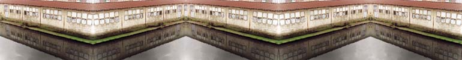

During the night, it was a micro-city. The flour and bread-producing
factory had a life of its own. Its main activity had to take place during the
night. The powerful and monumental machinery worked full-strength each day of
the week, mainly during the night. A frenetic activity forced the resolution
of any problem, be it technical, sanitary, or human at times in which the city
was parked. It had the most dissimilar jobs. The diverse reparation workshops,
the well equipped dispensary with doctor and X-rays, the lab with chemists and
technicians full of formulas. Transporters, sewers, cooks.
|  |
|